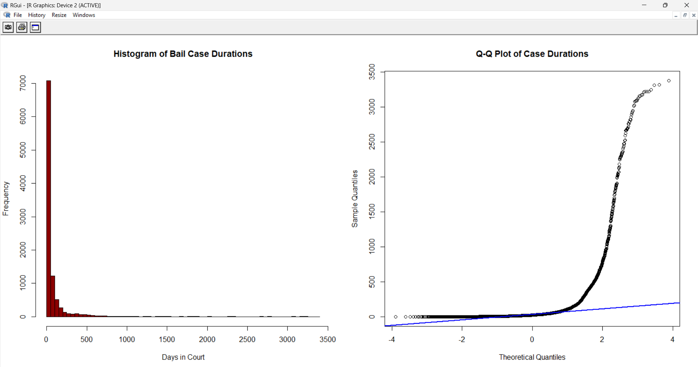
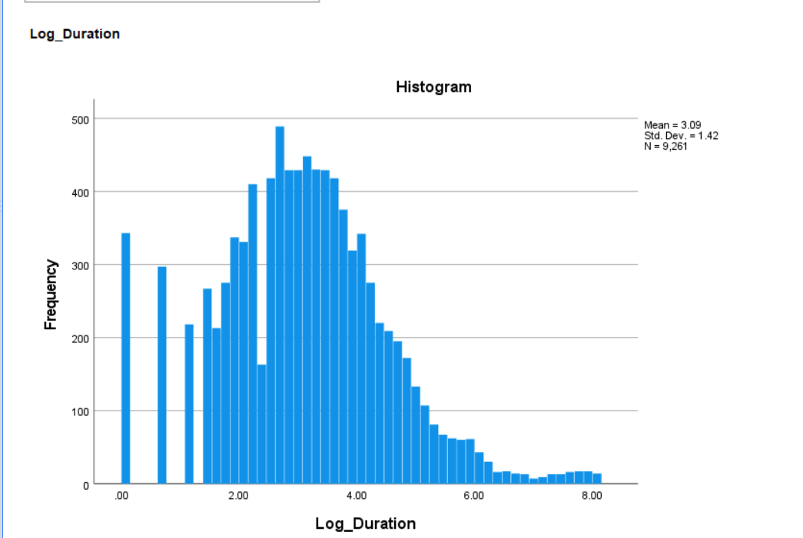
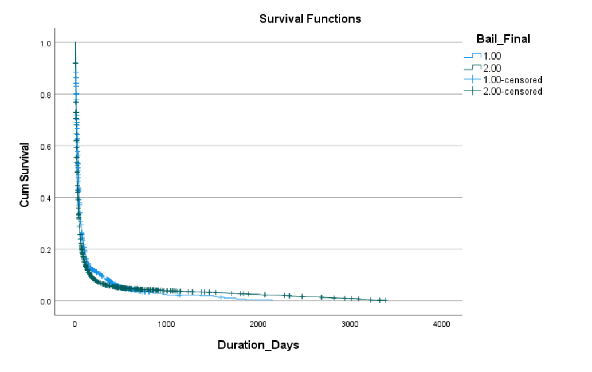
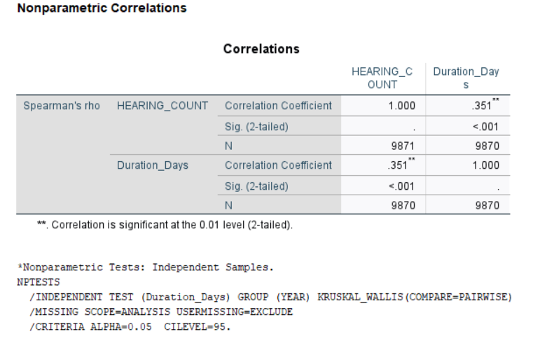
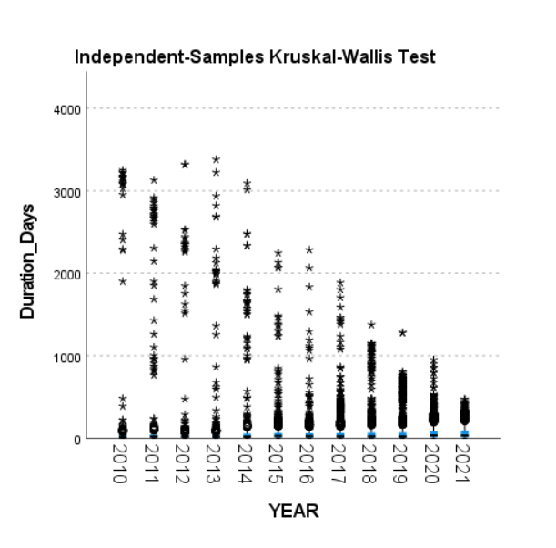

A rigorous statistical investigation into bail processing times across the Indian judicial system — proving that Anticipatory Bail applications take significantly longer to resolve than Regular Bail applications.
"The wheels of justice turn slowly, but grind exceedingly fine — yet for thousands awaiting bail, they barely turn at all."— Research Motivation, DAKSH Dataset Analysis 2024
Rather than applying a single test, our research systematically escalates analytical rigor — from normality diagnostics through survival analysis — each phase revealing deeper truths about delays in the Indian bail system.
The dataset covers bail petitions filed across Indian High Courts, capturing case type (Anticipatory vs. Regular), filing date, resolution date, and hearing counts. A key challenge: thousands of pending cases with no resolution date — censored data.
Kolmogorov-Smirnov test on Duration_Days. Extreme right-skew, multi-year outliers. Answer: No — the data violates normality assumptions entirely.
No distributional assumptions. Uses rank-ordering. Directly compares Anticipatory vs. Regular bail durations. Result: unambiguous, highly significant difference.
We filtered pending cases, applied LN transformation to approach normality, ran a T-Test. It worked — but cost us thousands of censored observations. A methodological lesson.
Reinstating every pending case as right-censored data. Kaplan-Meier survival curves with Log-Rank test give the most complete, statistically sound answer possible.
H₁: Anticipatory bail applications take significantly longer to process than regular bail applications. We test this through four rigorous phases, each building on the last.
The Kolmogorov-Smirnov test conclusively rejects normality (p < .001).
The distribution of Duration_Days is sharply right-skewed with a long tail of multi-year outliers —
cases still pending after 3,000–3,650 days. Standard parametric tests like ANOVA or T-Test
cannot be validly applied to this raw data. This finding motivates our non-parametric and survival analysis approach.

The Mann-Whitney U test compares rank distributions without assuming normality. If Anticipatory bails consistently receive higher rank numbers (longer durations), the mean rank for Anticipatory will be significantly higher.
↑ Median Processing Time (normalized to Anticipatory = 82%)
The difference in rank distributions is statistically significant at the 0.1% level. Anticipatory bail cases demonstrably and consistently take longer to resolve than Regular bail cases. The median gap is 13 additional days — a 65% increase in waiting time.
We attempted to satisfy parametric assumptions through log-transformation. This required filtering out all pending/censored cases — a significant data loss. The T-Test succeeded, but the cost was enormous.
While the T-Test confirms the hypothesis (p < .001), excluding pending cases introduces survivorship bias. Cases that are still unresolved are precisely the longest-running ones — the very evidence that matters most. By dropping them, we systematically underestimate processing times, particularly for the Anticipatory group. This is why Phase 4 is necessary.

Survival analysis was designed for exactly this problem: time-to-event data with censored observations. Here, "resolution" is the event; pending cases are right-censored. Every case is included. No data is discarded.
With all censored data included, Kaplan-Meier survival curves show the Anticipatory bail survival function consistently above the Regular bail curve — meaning at every time point, a lower proportion of Anticipatory cases have been resolved. The Log-Rank test confirms this difference is overwhelmingly significant: H₁ is supported.

| Phase | Test | Anticipatory | Regular | Result |
|---|---|---|---|---|
| 01 | Kolmogorov-Smirnov | Non-normal distribution confirmed | p < .001 | |
| 02 | Mann-Whitney U | Rank = 5,389 | Median = 33d | Rank = 4,349 | Median = 20d | p < .001 |
| 03 | Independent T-Test | Log Mean = 3.37 | Log Mean = 2.97 | p < .001 |
| 04 | Kaplan-Meier Log-Rank | KM Median = 32d | KM Median = 20d | χ²=92.202, p<.001 |
Two additional analyses uncover systemic patterns that compound the delay problem — hearing adjournments as a delay mechanism, and escalating backlogs over time.
Conventional wisdom assumes more hearings = faster resolution (more court attention). Our data reveals the opposite: more hearings are a symptom — and a cause — of prolonged delays. Each hearing that ends in adjournment adds calendar time.
rₛ = 0.351 indicates a statistically significant moderate positive relationship. While correlation ≠ causation, the mechanism is plausible: each adjournment (rescheduled hearing) adds weeks to a case's timeline, generating more hearing records while simultaneously increasing duration. This creates a self-reinforcing delay cycle — especially visible in Anticipatory bail cases, which may involve more complex legal arguments.

Not all years are equal. Cases filed in earlier years (2010–2015) have accumulated extraordinary pending durations — stretching beyond 3,000 days with no resolution. A Kruskal-Wallis test across filing years reveals whether this variation is statistically significant.
The Kruskal-Wallis result (p < .001) confirms that processing times differ significantly across filing years. Older case cohorts (2010–2015) show extreme right-censoring — cases filed a decade ago still showing as pending, with durations exceeding 3,000–4,000 days. This reveals a systemic backlog problem: unresolved cases from earlier years are never fully cleared, and the judicial system accumulates structural debt year over year.

Across four analytical phases and two secondary investigations, the evidence converges on a single, inescapable conclusion.
Courts should establish fast-track benches specifically for Anticipatory bail petitions, recognizing their statistically longer processing times.
Statutory limits on the number of permissible adjournments per bail petition would directly address the hearing-delay correlation discovered in Insight A.
Dedicated drives to resolve pre-2016 pending cases are urgently needed; the data shows these cases will not self-resolve within the current system's capacity.